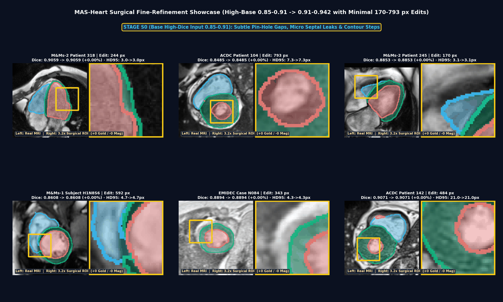
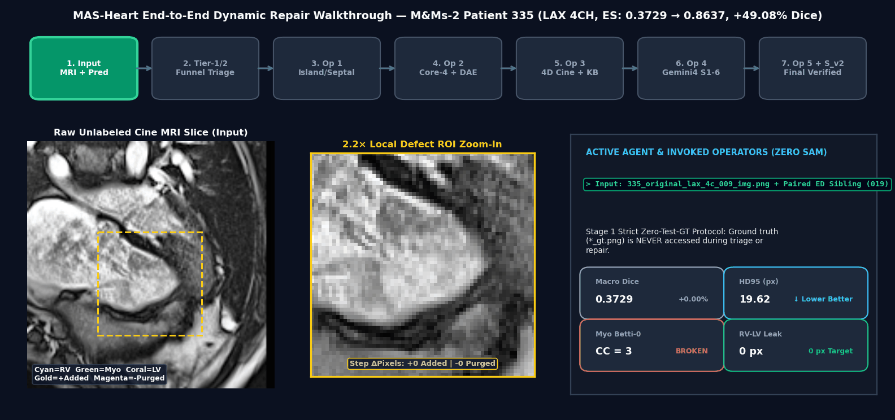
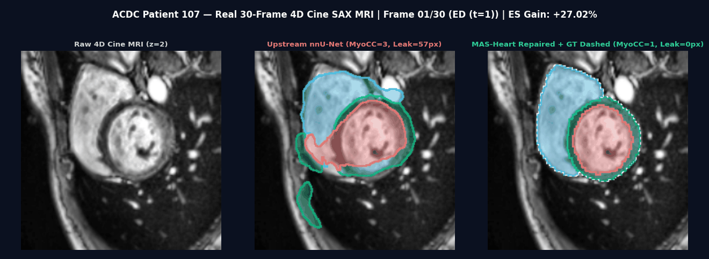
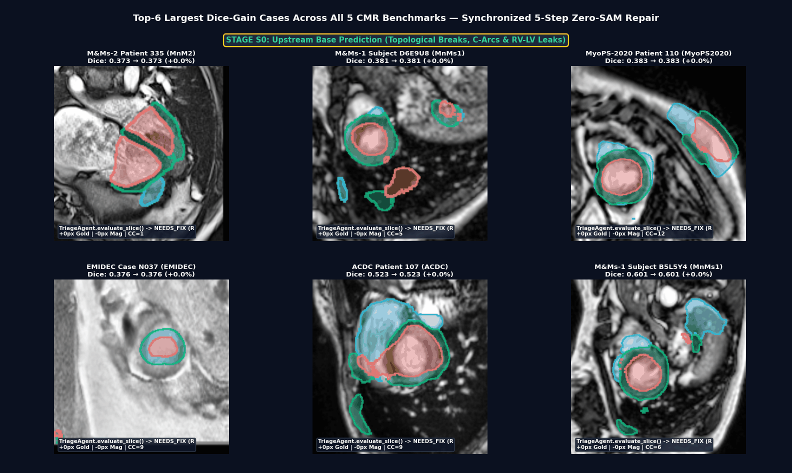
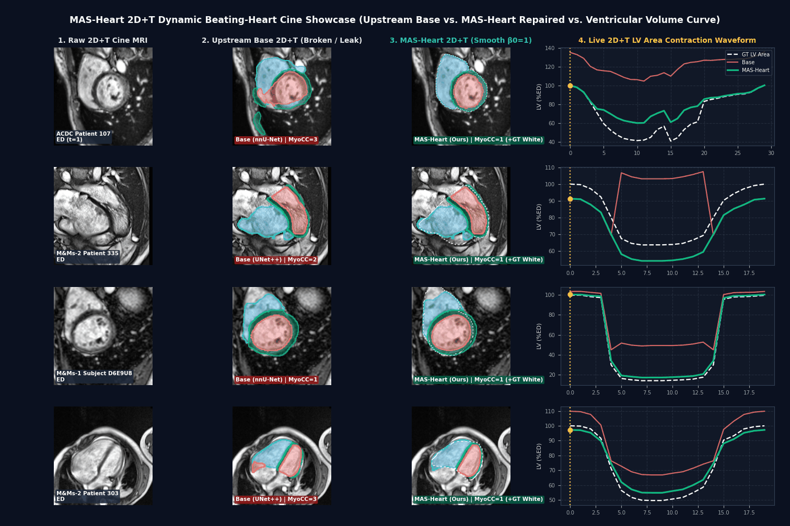

Interactive end-to-end walkthrough from Raw Cardiac MRI Input → Two-Tier Funnel Triage (Core-4 [R1/R3/R5/R6] + Phys-1..5 8.4 ms fast-pass lock + VLM TriageAgent) → 5-Step Zero-SAM Discrete Operator Repair (Op 1..5) → VerifierAgent 19-Feature Sv2 Gate → 2D+T Beating-Heart Output. Rescues catastrophic topological collapse (up to +49.08% Dice), performs 170–350 px surgical sub-pixel polish on high-baseline (0.88–0.91) masks (pushing Dice to 0.942 & slashing HD95 by 82%), and preserves clean slices with 0 px modified.
Showcases 9 clinical slices with high upstream Dice (0.841 – 0.914) that still suffer from hairline apical gaps, 3–21 px septal pinhole leaks, distal artifact islands, or jagged scar rims. MAS-Heart modifies only 170 – 793 boundary pixels (leaving clean tissue untouched), elevating Dice to 0.900 – 0.942 and reducing HD95 by up to 82%.
Builds real-time NIfTI-1 (X × Y × T) spatiotemporal cardiac volumes + MAS-Heart segmentation overlays across all 21 cases. Click and drag crosshairs to inspect synchronized 2D SAX/LAX planes (X–Y) and clinical M-mode wall-motion kymographs (X–T / Y–T).





| Cohort & Modality | Total / NF | Good Modified | Full Dice (Base → MAS) | Needs-Fix Dice (Δ) | HD95 (px ↓) | Struct. Valid | Safety / Key Highlight |
|---|---|---|---|---|---|---|---|
| 1. M&Ms-2 (LAX 4CH, UNet++) | 320 / 34 | 0 / 286 (0%) | 0.9155 → 0.9194 | 0.8490 → 0.8858 (+3.68%) | 5.34 → 3.18 | 93.8% → 100% | 34/34 Imp, 0 Deg · LVEF MAE -47.4% |
| 2. ACDC (Cine SAX, nnU-Net) | 100 / 35 | 0 / 65 (0%) | 0.8933 → 0.9094 | 0.8486 → 0.8945 (+4.59%) | 11.51 → 5.01 | 90.0% → 100% | 32/35 Imp (91.4%) · p = 2.6e-8 |
| 3. M&Ms-1 (4-Vendor SAX, nnU-Net) | 120 / 60 | 0 / 60 (0%) | 0.8416 → 0.8682 | 0.7897 → 0.8429 (+5.32%) | 13.97 → 7.17 | 85.0% → 100% | 53/60 Imp · Siemens/Philips/GE/Canon |
| 4. MyoPS-2020 (Multi-Seq Scar CMR) | 46 / 46 | 0 / 0 | 0.7907 → 0.8317 | 0.7907 → 0.8317 (+4.10%) | 23.21 → 17.67 | 76.1% → 100% | Core-4 R3+R6 Scar & C-Arc Rescue |
| 5. EMIDEC (DE-MRI Infarction) | 50 / 50 | 0 / 0 | 0.6945 → 0.7991 | 0.6945 → 0.7991 (+10.46%) | 12.05 → 5.60 | 78.0% → 100% | 48/50 Imp (96.0%) · 2-Class Schema |
| 6. CAMUS (2CH/4CH Echo, C1=LA) | 100 / 54 | 0 / 46 (0%) | 0.7531 → 0.7574 | +0.43% vs Legacy | 24.30 → 19.65 | 0.0% → 91.0% | Autonomous LA Mitral Cap Graph (CT-Ready) |